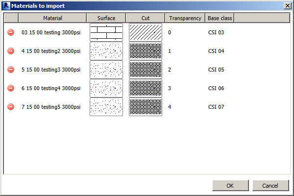
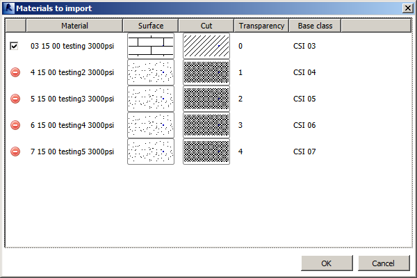

Getting Serious Adding New Materials from List
Here is a post on some serious usability enhancements for the AddMaterials add-in, which reads a list of material properties from an Excel spreadsheet and generates Revit material elements accordingly.
It was originally presented for Revit 2011, reimplemented for Revit 2014, and enhanced with improved error messages and reporting soon after.
Until now, it was more of a programming example than an actual usable tool, but that is starting to change, thanks to a number of enhancements by Alexander Ignatovich, last but least the WPF FillPattern viewer control presented last week. Says Alex:
I want to further enhance the tool for adding new materials from a list.
First of all, I split off the XLS data reading from the materials creation. I also noticed that we cannot create a new material if the copy source base material does not exist in project, i.e. there if is no material with the name provided in 11 column. Another problem I noticed occurs if I try to run the add-in command several times: in this case, it tries to repeatedly generate materials with the same name, and the LINQ ToDictionary method fails. So, we must avoid such situations.
Summarizing: let's read data, mark the materials with no base class provided, or base class not found, and existing materials as "non-loadable", show the materials list to the user, where he (or she) can deselect some items and create the resulting materials list.
And one other, I think, the most valuable thing: in the materials import dialogue I added surface and cut pattern preview controls (see View\Controls\FillPatternViewerControlWpf.xaml). This code is based on work performed by Victor Chekalin when he was working in our company.
I hope this code sample will be helpful. Sorry, maybe some things are not accurate. For example, Visual Studio does not show the design view of the MaterialsView form, because my MaterialViewModel.SurfacePattern and MaterialViewModel.CutPattern classes are really Autodesk.Revit.DB.FillPattern, but it is just an example :-)
Thank you very much, and thanks to Victor as well for the nice fill pattern viewer.
That is a powerful tool and sample in its own right.
Here are screen snapshots of the AddMaterials add-in in action running. In the first run, none of the CSI copy source base materials have been defined in the current project, so no new materials can be added:

In the second run, I manually added one CSI material to copy from, and now one material can be added:

If this project is of further interest, another enhancement might be to remove the COM references to Microsoft office, to allow the command to work on computers without Microsoft Office installed.
Once again, many thanks to Victor and Alex for these valuable enhancements!
The complete source code, Visual Studio solution and add-in manifest is provided in the AddMaterials GitHub repository.
The version discussed above is release 2014.0.0.2.
Please feel free to fork that and add your own enhancements as well.
Good luck!